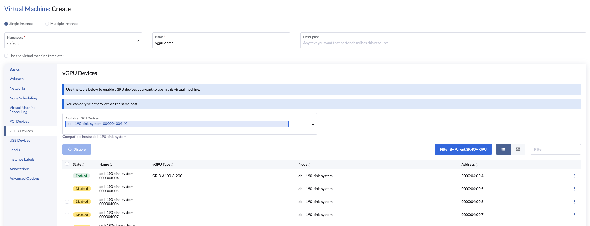

|
Este documento ha sido traducido utilizando tecnología de traducción automática. Si bien nos esforzamos por proporcionar traducciones precisas, no ofrecemos garantías sobre la integridad, precisión o confiabilidad del contenido traducido. En caso de discrepancia, la versión original en inglés prevalecerá y constituirá el texto autorizado. |
Soporte de vGPU
SUSE Virtualization es capaz de compartir el soporte de GPU NVIDIA para la Virtualización de Entrada/Salida de Raíz Única (SR-IOV). Esta capacidad adicional, que es proporcionada por el complemento controlador-pcidevices, aprovecha sriov-manage para la gestión de GPU.
Para determinar si tu GPU soporta SR-IOV, consulta la documentación del dispositivo. Para más información sobre cómo crear un vGPU de NVIDIA que soporte SR-IOV, consulta la documentación de NVIDIA.
Debes habilitar el complemento nvidia-driver-toolkit para poder gestionar el ciclo de vida de los vGPUs en los dispositivos GPU.
Uso
-
En la interfaz de usuario, ve a Avanzado → Dispositivos GPU SR-IOV y verifica lo siguiente:
-
Los dispositivos GPU han sido escaneados.
-
Se ha creado un objeto
sriovgpudevices.devices.harvesterhci.ioasociado.
-
-
Localiza el dispositivo que deseas habilitar y luego selecciona ⋮ → Habilitar.

-
Ve a la pantalla de Dispositivos vGPU y comprueba los objetos
vgpudevices.devices.harvesterhci.ioasociados.Permite un tiempo para que el controlador-pcidevices escanee los dispositivos vGPU y para que la interfaz de usuario SUSE Virtualization muestre la información del dispositivo.

-
Selecciona un vGPU y configura un perfil.

La lista de perfiles depende de la GPU y del árbol /sys subyacente del host. Para más información sobre los perfiles disponibles y sus capacidades, consulta la documentación de NVIDIA.
Después de seleccionar el primer perfil, el controlador NVIDIA configura automáticamente los perfiles disponibles para los vGPUs restantes.
-
Adjunta el vGPU a una nueva máquina virtual o a una existente.

Una vez que un vGPU ha sido asignado a una máquina virtual, puede que no sea posible deshabilitar la máquina virtual hasta que el vGPU sea eliminado.
Dispositivos vGPU respaldados por MIG
|
La siguiente información se aplica solo a las NVIDIA GPU que soportan la partición basada en GPU de Múltiples Instancias (MIG), como la A100, H100 y H200. |
SUSE Virtualization permite compartir vGPUs respaldadas por MIG entre máquinas virtuales. Las vGPUs respaldadas por MIG residen en una instancia de GPU en una GPU física compatible con MIG. Cada vGPU respaldada por MIG tiene acceso exclusivo a los motores de la instancia de GPU, incluidos los motores de computación y de decodificación de video.
SUSE Virtualization crea el objeto MIGConfiguration solo si la GPU detectada admite particionamiento basado en MIG.
Habilitando dispositivos vGPU respaldados por MIG
-
En la interfaz de usuario de SUSE Virtualization, ve a Configuraciones de → vGPU MIG Avanzadas y verifica lo siguiente:
-
Se ha creado una configuración de MIG para admitir dispositivos GPU.
-
Se ha creado un objeto
migconfiguration.devices.harvesterhci.ioasociado.
-
-
Define los perfiles de MIG para tu GPU y habilita la configuración de MIG.
Consulta la documentación de la GPU para obtener información sobre la configuración de MIG y las combinaciones disponibles.

-
Ve a Dispositivos vGPU Avanzados y habilita el dispositivo vGPU asociado con la configuración de MIG.
Los nuevos perfiles de MIG creados están disponibles como tipos de vGPU válidos.
Una vez habilitado, el dispositivo vGPU puede ser utilizado con una máquina virtual.

limitaciones
Adjuntar múltiples vGPUs
Adjuntar múltiples vGPUs a una máquina virtual puede fallar por las siguientes razones:
-
No todos los perfiles de vGPU admiten la conexión de múltiples vGPUs. La documentación de NVIDIA enumera los perfiles de vGPU que admiten esta función. Por ejemplo, si utilizas GPUs NVIDIA A2 o A16, ten en cuenta que solo las vGPUs de la serie Q te permiten adjuntar múltiples vGPUs.

-
Solo 1 dispositivo GPU en la definición de la máquina virtual puede tener
ramFBhabilitado. Para adjuntar múltiples vGPUs, debes editar la configuración de la VM (en YAML) y añadirvirtualGPUOptionsa todos los dispositivos vGPU no primarios.virtualGPUOptions: display: ramFB: enabled: falseProblema relacionado: https://github.com/harvester/harvester/issues/5289
Límite de vGPUs utilizables
Cuando se habilita el soporte de vGPU en una GPU, el controlador NVIDIA crea 16 dispositivos vGPU por defecto. Después de seleccionar el primer perfil, el controlador NVIDIA configura automáticamente los perfiles disponibles para los vGPUs restantes.
El perfil utilizado también dicta el número máximo de vGPUs disponibles para cada GPU. Una vez que se agota el máximo, no se pueden seleccionar perfiles para los vGPUs restantes y esos dispositivos no pueden ser configurados.
Ejemplo (NVIDIA A2 GPU):
Si seleccionas el perfil NVIDIA A2-4Q, solo puedes configurar 4 dispositivos vGPU. Una vez que esos dispositivos están configurados, no puedes seleccionar ningún perfil para los vGPUs restantes.

Análisis técnico en profundidad
pcidevices-controller introduce los siguientes CRD:
-
sriovgpudevices.devices.harvesterhci.io
-
vgpudevices.devices.harvesterhci.io
Al arrancar, pcidevices-controller escanea el host en busca de GPUs NVIDIA que soporten dispositivos vGPU SR-IOV. Cuando se encuentran tales dispositivos, se representan como un CRD.
Ejemplo:
apiVersion: devices.harvesterhci.io/v1beta1
kind: SRIOVGPUDevice
metadata:
creationTimestamp: "2024-02-21T05:57:37Z"
generation: 2
labels:
nodename: harvester-kgd9c
name: harvester-kgd9c-000008000
resourceVersion: "6641619"
uid: e3a97ee4-046a-48d7-820d-8c6b45cd07da
spec:
address: "0000:08:00.0"
enabled: true
nodeName: harvester-kgd9c
status:
vGPUDevices:
- harvester-kgd9c-000008004
- harvester-kgd9c-000008005
- harvester-kgd9c-000008016
- harvester-kgd9c-000008017
- harvester-kgd9c-000008020
- harvester-kgd9c-000008021
- harvester-kgd9c-000008022
- harvester-kgd9c-000008023
- harvester-kgd9c-000008006
- harvester-kgd9c-000008007
- harvester-kgd9c-000008010
- harvester-kgd9c-000008011
- harvester-kgd9c-000008012
- harvester-kgd9c-000008013
- harvester-kgd9c-000008014
- harvester-kgd9c-000008015
vfAddresses:
- "0000:08:00.4"
- "0000:08:00.5"
- "0000:08:01.6"
- "0000:08:01.7"
- "0000:08:02.0"
- "0000:08:02.1"
- "0000:08:02.2"
- "0000:08:02.3"
- "0000:08:00.6"
- "0000:08:00.7"
- "0000:08:01.0"
- "0000:08:01.1"
- "0000:08:01.2"
- "0000:08:01.3"
- "0000:08:01.4"
- "0000:08:01.5"
Cuando se habilita un SRIOVGPUDevice, el controlador pcidevices trabaja con el daemonset nvidia-driver-toolkit para gestionar los dispositivos GPU.
En un escaneo posterior del árbol /sys por parte de los pcidevices, los dispositivos vGPU son escaneados por el controlador pcidevices y gestionados como VGPUDevices CRD.
NAME ADDRESS NODE NAME ENABLED UUID VGPUTYPE PARENTGPUDEVICE harvester-kgd9c-000008004 0000:08:00.4 harvester-kgd9c true dd6772a8-7db8-4e96-9a73-f94c389d9bc3 NVIDIA A2-4A 0000:08:00.0 harvester-kgd9c-000008005 0000:08:00.5 harvester-kgd9c true 9534e04b-4687-412b-833e-3ae95b97d4d1 NVIDIA A2-4Q 0000:08:00.0 harvester-kgd9c-000008006 0000:08:00.6 harvester-kgd9c true a16e5966-9f7a-48a9-bda8-0d1670e740f8 NVIDIA A2-4A 0000:08:00.0 harvester-kgd9c-000008007 0000:08:00.7 harvester-kgd9c true 041ee3ce-f95c-451e-a381-1c9fe71918b2 NVIDIA A2-4Q 0000:08:00.0 harvester-kgd9c-000008010 0000:08:01.0 harvester-kgd9c false 0000:08:00.0 harvester-kgd9c-000008011 0000:08:01.1 harvester-kgd9c false 0000:08:00.0 harvester-kgd9c-000008012 0000:08:01.2 harvester-kgd9c false 0000:08:00.0 harvester-kgd9c-000008013 0000:08:01.3 harvester-kgd9c false 0000:08:00.0 harvester-kgd9c-000008014 0000:08:01.4 harvester-kgd9c false 0000:08:00.0 harvester-kgd9c-000008015 0000:08:01.5 harvester-kgd9c false 0000:08:00.0 harvester-kgd9c-000008016 0000:08:01.6 harvester-kgd9c false 0000:08:00.0 harvester-kgd9c-000008017 0000:08:01.7 harvester-kgd9c false 0000:08:00.0 harvester-kgd9c-000008020 0000:08:02.0 harvester-kgd9c false 0000:08:00.0 harvester-kgd9c-000008021 0000:08:02.1 harvester-kgd9c false 0000:08:00.0 harvester-kgd9c-000008022 0000:08:02.2 harvester-kgd9c false 0000:08:00.0 harvester-kgd9c-000008023 0000:08:02.3 harvester-kgd9c false 0000:08:00.0
Cuando un usuario habilita y selecciona un perfil para el VGPUDevice, el controlador pcidevices configura el dispositivo y establece el perfil correcto en dicho dispositivo.
apiVersion: devices.harvesterhci.io/v1beta1
kind: VGPUDevice
metadata:
creationTimestamp: "2024-02-26T03:04:47Z"
generation: 8
labels:
harvesterhci.io/parentSRIOVGPUDevice: harvester-kgd9c-000008000
nodename: harvester-kgd9c
name: harvester-kgd9c-000008004
resourceVersion: "21051017"
uid: b9c7af64-1e47-467f-bf3d-87b7bc3a8911
spec:
address: "0000:08:00.4"
enabled: true
nodeName: harvester-kgd9c
parentGPUDeviceAddress: "0000:08:00.0"
vGPUTypeName: NVIDIA A2-4A
status:
configureVGPUTypeName: NVIDIA A2-4A
uuid: dd6772a8-7db8-4e96-9a73-f94c389d9bc3
vGPUStatus: vGPUConfigured
El controlador pcidevices también ejecuta un plugin de dispositivo vGPU, que publicita los detalles de los diversos perfiles vGPU al kubelet. Esto es utilizado luego por el programador de k8s para colocar las VM que solicitan vGPUs en los nodos correctos.
(⎈|local:harvester-system)➜ ~ k get nodes harvester-kgd9c -o yaml | yq .status.allocatable cpu: "24" devices.kubevirt.io/kvm: 1k devices.kubevirt.io/tun: 1k devices.kubevirt.io/vhost-net: 1k ephemeral-storage: "149527126718" hugepages-1Gi: "0" hugepages-2Mi: "0" intel.com/82599_ETHERNET_CONTROLLER_VIRTUAL_FUNCTION: "1" memory: 131858088Ki nvidia.com/NVIDIA_A2-4A: "2" nvidia.com/NVIDIA_A2-4C: "0" nvidia.com/NVIDIA_A2-4Q: "2" pods: "200"
El controlador pcidevices también configura la integración con kubevirt y anuncia los dispositivos vGPU como dispositivos gestionados externamente en el CR de Kubevirt para asegurar que la VM pueda consumir los vGPU.